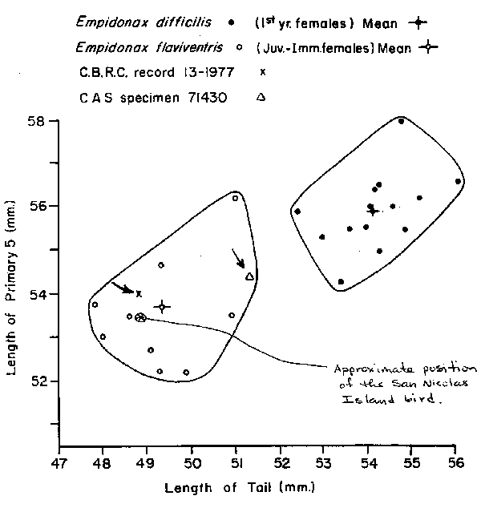

|  |
| Figure 7. Scatter plot of values of length of primary 5 versus length of tail in samples of young female Western (Empidonax difficilis sensu lato) and Yellow-bellied Flycatchers (E. flaviventris). Figure adapted from DeSante et al. (1985). Additional datum added by Michael A. Patten. |